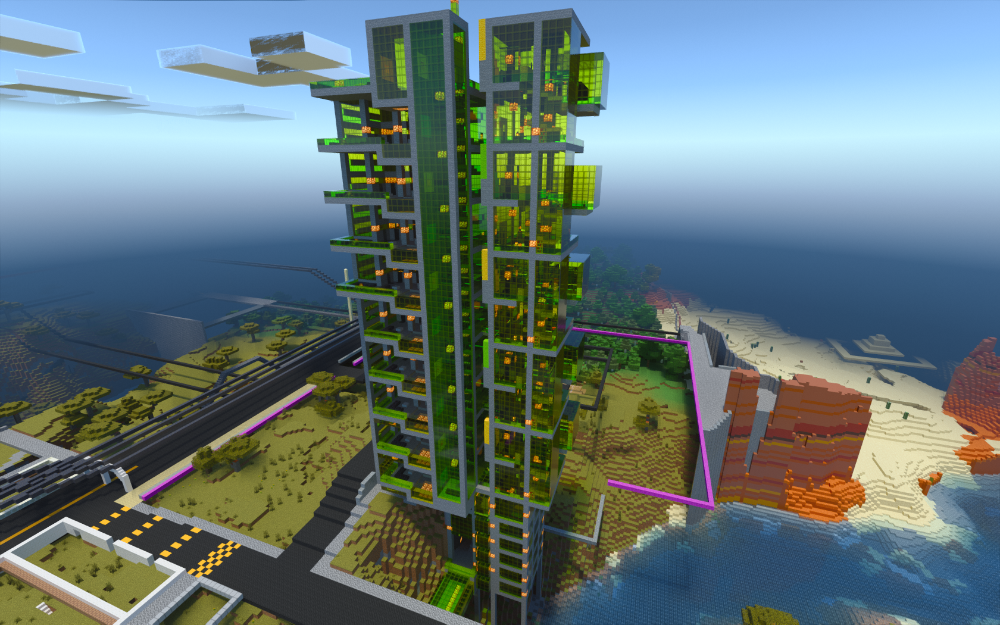
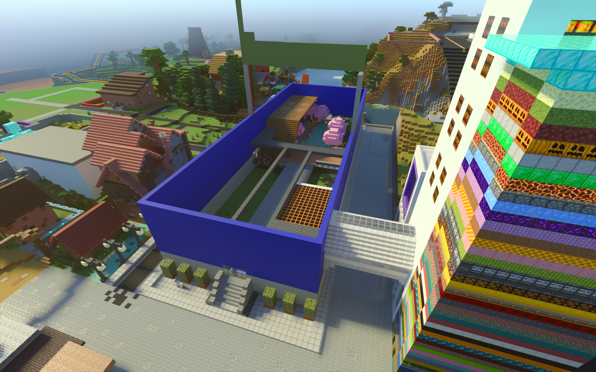

Boofarzia is a creative realm made by Bananabirdboy, he and multiple other players have been building on this world for
many years now, more infromation will be added to this site once BananaBirdBoy provides it.
^ The "money tower" in upper shermanVille
^ Tindertower, made by tinderspark
^ The unfinished Upper ShermanVille shopping mall